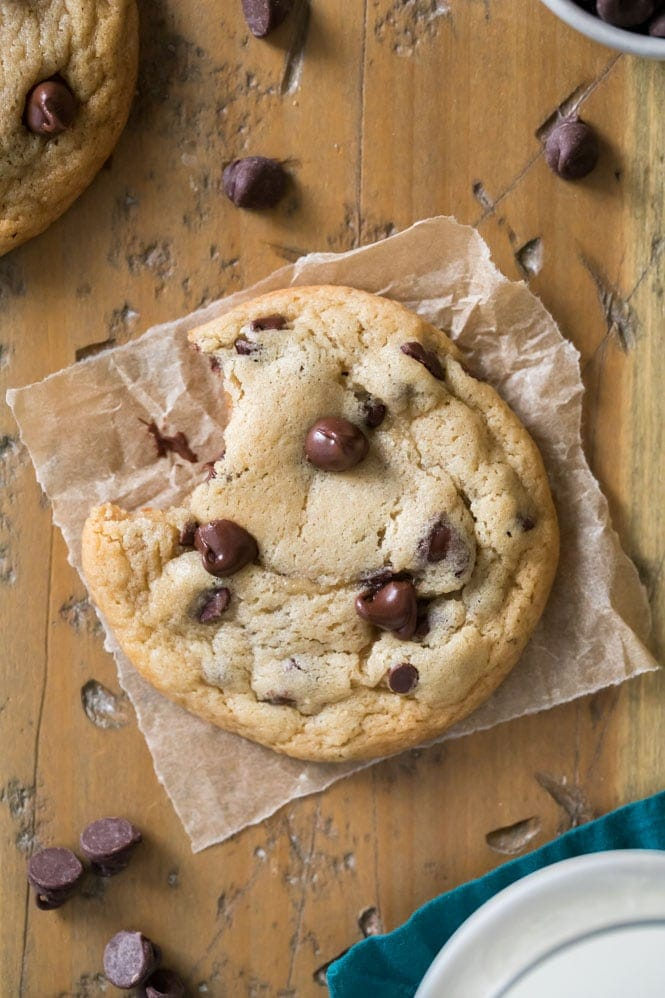

Chocolate Chip Cookies
Origin: American
Source: Betty Crocker
Category: Dessert
Ingredients
- 2 1/4 cups Gold Medal™ all-purpose flour
- 1 teaspoon baking soda
- 1/2 teaspoon salt
- 1 cup butter, softened
- 3/4 cup granulated sugar
- 3/4 cup packed brown sugar
- 1 egg
- 1 teaspoon vanilla
- 2 cups semisweet chocolate chips
- 1 cup coarsely chopped nuts, if desired
Recipe Steps
- Heat oven to 375°F. In small bowl, mix flour, baking soda and salt; set aside.
- In large bowl, beat softened butter and sugars with electric mixer on medium speed, or mix with spoon about 1 minute or until fluffy, scraping side of bowl occasionally. Beat in egg and vanilla until smooth.
- Stir in flour mixture just until blended (dough will be stiff). Stir in chocolate chips and nuts.
- Onto ungreased or parchment-lined cookie sheets, drop dough by rounded tablespoonfuls 2 inches apart.
- Bake 8 to 10 minutes or until light brown (centers will be soft). Cool 2 minutes; remove from cookie sheet to cooling rack. Cool completely, about 30 minutes. Store covered in airtight container.
Additional Food Images

Tiffanie Corwin
Simple Beef Stroganoff
Origin: Russian
Source:
Category: Main Dish
Ingredients
- 1 (8 ounce) package egg noodles
- 1 pound ground beef
- 1 (10.75 ounce) can condensed cream of mushroom soup
- 1/2 cup milk
- 1 (8 ounce) container sour cream
- salt and pepper to taste
Recipe Steps
- Bring a large pot of lightly salted water to a boil. Add egg noodles and cook for 8 to 10 minutes or until al dente; drain.
- In a large skillet over medium-high heat, saute the ground beef for 5 to 10 minutes, or until browned. Drain the beef and add the soup, milk, sour cream, salt and pepper to taste and mix well.
- Reduce heat to low and simmer for 15 to 20 minutes. Stir in the cooked noodles and heat through.
Additional Food Images
Tiffanie Corwin
Parmesan Chicken Noodle Soup
Origin: American
Source: Food Network
Category: Main Dish
Ingredients
- 2 extra-virgin olive oil
- 1 medium onion, chopped
- 3 medium carrots, chopped
- 2 celery stalks, chopped
- 2 garlic cloves, minced
- 1 bay leaf
- 2 quarts chicken stock, recipe follows
- 1 pound boneless chicken breast
- 1 cup wide egg noodles
- 1/4 cup chopped fresh flat-leaf parsley
- 1/4 cup grated Parmesan, plus extra for garnish
- Kosher salt and freshly ground black pepper
Recipe Steps
- Heat the oil in a large pot over medium-high heat.
- Add the onion, carrots, celery, garlic, and bay leaf and saute until the vegetables are tender, about 5 minutes.
- Add the chicken stock and bring the mixture to a boil. Add the chicken breast, reduce the heat, and simmer until the chicken is cooked through, about 20 to 25 minutes.
- Using tongs, remove the chicken from the pot and set aside to cool slightly. Add the noodles and simmer for 5 minutes. Discard the bay leaf. Shred the chicken with 2 forks and add to the soup.
- Stir in the parsley and Parmesan and season with salt and pepper, to taste. Ladle the soup into serving bowls and sprinkle with Parmesan. Serve with crusty bread.
Additional Food Images